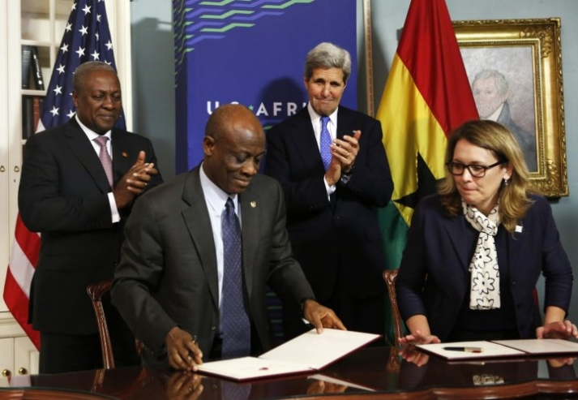
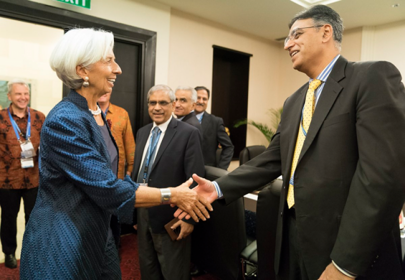

Essays, opinions, and more.
the thinker
WORLD BANK, IMF, AND POVERTY IN SUB-SAHARAN AFRICA AND PAKISTAN
March, 2019

Literature Review
Abstract
This literature review examines the effects of the World Bank and IMF structural adjustment programs on poverty reduction in Sub-Saharan Africa and Pakistan. Through this review, I seek to explore how successful the two multilateral institutions have been in reducing poverty and bridging the inequality gap in the focus countries. The IMF experiment, through structural adjustements, in sub-Saharan Africa was crucial in changing the direction of the sub-Saharan economies. The results of the experiment have helped bring about a shift in the subsequent IMF policies, however, the sub-Saharan economies often find themselves in a debt cycle. Pakistan presents a similar story where, since 1988, the country has been taking IMF loans incessantly, regardless of its ability to repay. Pakistan has implemented 12 IMF programmes to date and is expected to implement more in the future. The number of IMF programmes implemented by Pakistan far exceeds the total number of programmes implemented by all the countries in the region. This literature review aims to look at the effects of structural adjustments on the levels of poverty and how the policies pursued have affected the poorest factions of the society.
Introduction
International institutions have become increasingly involved in thinking about ways to reduce poverty in developing nations with high debt obligations. There are strong indicators that show that resources need to be diverted towards health and education for social policies to work effectively. Developing nations with high debt obligations are often forced to divert their available resources to finance the loans which makes progress in such countries nearly impossible.
The IMF and the World Bank have only just recently steered their policies to include initiatives that are designed to tackle the persisting concerns regarding poverty and inequality. The introduction of Heavily Indebted Poor Countries Initiatives (HIPC) in 1996, and the implementation of Poverty Reduction Strategy Papers in 1999 are two of the most significant initiatives taken in this regard. While the World Bank looks at poverty as a developmental and societal issue, the IMF focuses more on macroeconomic indicators that affect the levels of poverty. The approaches taken by both institutions towards poverty alleviation are driven by their institutional characteristics. Although in the past, these institutions have focused more on the economic growth of the countries and less on the effects of growth on the citizens, they are now looking at poverty alleviation as an important aspect of economic development and the well-being of the citizens of the countries. This shift in focus can be attributed to the growing criticism of the international financial institutions for policing the world’s financial system and deteriorating the poverty situation in the developing world by implementing adjustment policies that further put a strain on the nascent economies.
Critics often point out that the range and the number of conditions imposed by IMF on the borrowers have increased sharply since the 1990s (Yukhananov, 2014). World Bank and the IMF often provide structural adjustment lending to developing countries to deal with the balance of payments. These loans come with structural reform conditions that require the borrower to make certain structural adjustments. The policy conditions attached to the loans are often controversial and cover a broad spectrum of economic policies including but not limited to altering fiscal policies, bringing about tax reforms by broadening the tax base, liberalizing the economy by allowing foreign companies to invest in the local economy, and privatizing state enterprises. The adjustment policies promoted by both the World Bank and the IMF have proved to be determinantal to many developing economies where they have increased the poverty level and inequality. The experiences of Sub-Sahara Africa and Pakistan will help demonstrate this point further.
Sub-Sahara Africa
During the 1980s, African countries were hit with a continent-wide economic crisis, triggered by the 1973 oil shock, which forced them to turn to the IMF and the World Bank for help. As the findings by Pamela Blackmon (2008) suggest, both institutions held a strong bargaining position in sub-Saharan Africa where the countries lacked the expertise to analyze global trends and develop economic policies accordingly (Blackmon, 2008). The IMF imposed strict economic conditions to deal with the balance of payments problem. The loan conditionality was controversial as it gave the IMF the power to alter the fiscal and economic policies by dictating the African countries to undertake stabilization policies. Under the IMF and World Bank structural adjustment, African countries experienced severe social and economic impacts that manifested themselves in the form of slower GDP growth, increased poverty, lower incomes, low human development indicators, increased debt burdens, decrease in healthcare and increase in disease, lack of clean drinking water, and decrease in education levels. Before the adjustments were put in place, Africa’s GDP per capita grew by 36% during the period from 1960 to 1980 (Weisbrot, Naiman, & Kim, 2000). The adjustments had adverse effects on GDP as it fell by 15% during 1980 and 2000 affecting hundreds of millions of people. There was a 75% increase in poverty level from 1994 to 2003 bringing the total number of people living under the poverty line to 350 million which was more than half of Africa’s population of 682 million. Asad Ilmi (2004) concludes in his paper that the substantial increase in poverty along with other poorly performing indicators depicted that the IMF adjustment had ended up impoverishing Sub-Saharan Africa (Ismi, 2004).
The impact of structural adjustment varied across the continent as it affected different African countries in different ways. Before Zimbabwe implemented the structural adjustment programme in the 1980s, its economy was growing at a rate of 4% per year, government spending on health and education services was high, exports constituted of manufactured goods, and the country was able to repay debts regularly (Naiman & Watkins, 1999). However, after numerous years of stagnation in economic growth, Zimbabwe took a $484 million loan from IMF in 1991 to jump-start their economy. The country implemented structural adjustments guided by the IMF which included “reducing trade tariffs and import duties, eliminating foreign currency controls, removing protections for the manufacturing sector, deregulating the labor market, lowering the minimum wage, ending employment security, cutting the fiscal deficit, reducing the tax rate and deregulating financial markets” (Ismi, 2004). These measures proved devastating to the local economy and forced businesses to close down leading to high unemployment rates and increased poverty. In 1992, the Zimbabwe economy took a downturn leading to a sharp fall in GDP by 8%. The collapse of wages and the decline in manufacturing production meant that the percent of people living on less than $2 a day increased to 68% in 1999. The rural population was particularly worse off as a result of the adjustments as food prices increased making it increasingly hard for the poor to make a living off of the meager wages. Farmers took a hit as well because of the removal of agricultural subsidies and reduced government spending on infrastructure such as roads. In a nutshell, the IMF structural adjustment programme destroyed the productive capacity of a country that was progressing before the adjustments were put in place. The adjustments resulted in increased poverty and unemployment.

Similar results unfolded in Ghana where adjustment measures, advocated by the World Bank, implemented in 1983 included privatization of state enterprises, elimination of exchange regulations and tariff barriers, and ending of health and education subsidies. The results were a reduction in employment rates and an increase in poverty levels as food prices increased and it became increasingly difficult for the poor to sustain their lives. Necessities such as healthcare services and sanitation became rare and expensive and, by 1998, 40% of the population lived below the poverty line as GDP per capita decreased from $411 in 1975 to $390 in 1998 (Nsorwine, Amenga-Etego, & Grusky, 2005). This is a clear indication of the ineffectiveness of the IMF structural adjustments.
In the pursuit of IMF and World Bank policy prescriptions, Ghana has witnessed both political volatilities as well as socio-economic hardships. Even after the implementation of IMF policies for more than four decades, the country’s economy remains the same. Deteriorating economic conditions in 2008 forced Ghana to go back to IMF for a $602 million loan. The conditionality attached to the loan required the government of Ghana to put an upper limit on the overall fiscal deficits along with other structural conditionalities such as “net hiring freeze in non-priority sectors, inflation targeting, and monetary tightening, bringing average tariff to cost recovery levels, implementing actions to strengthen revenue collection by the Electricity Company of Ghana, and adoption of plans to restructure the balance sheets of utility companies during 2010-11” (Ghana, 2010). The conditionalities that came with the new loan were not decidedly different from the ones put forward before, however this time, the structural conditions were not legally binding. Nevertheless, to meet the time-bound targets of reducing the budget deficit to 9.2% in 2009, the government deferred legislative payments to health and education funds. The findings of Actionaid Ghana (2010) demonstrate that the implications of this deferment mean compromising the quality of education and health services and creating a teacher deficit. The denial of affordable and quality healthcare, education, and food has led to a destitute population.
Pakistan
Tilat Anwar and Zafar Iqbal (1996) have studied the effects of structural adjustment on poverty levels in Pakistan during the 1980s. Pakistan experienced an economic crisis in 1988 that stemmed from the balance of payments deficit. Pakistan resorted to IMF and World Bank to implement medium-term structural adjustment programme aimed at restoring the macroeconomic balances. The two international financial institutions endorsed policy reforms that would reduce the aggregate demand and have an impact on agriculture, trade, industry, energy, and the financial sector. Just like in the case of African countries, the IMF put structural adjustment conditions aimed at improving the balance of payments and bridging the budget deficit. The macroeconomic changes that followed the adjustment programme included measures to reduce government expenditure and increase revenues, changes in pricing policies, and liberalization of trade regime (Anwar & Iqbal, 1996).

The government of Pakistan took several steps to reduce the budget deficit such as freezing employment, off-putting discretionary grants to provinces, and restraining wages. Throughout the adjustment period, the government cut spending on social services including healthcare and education as a result of which the share of social services in GNP declined from 3.4% in 1988 to 2.8% in 1991. This had an adverse effect on the demand for labor in the short term and on the health and education of the underprivileged sections of the society which were left with inadequate employment opportunities and limited access to quality education and health services. Poor and unskilled labor was further hit by the cuts in the development spending which was reduced from 6.8% of GNP in 1988 to 6.5% in 1991.
To satisfy the IMF’s requirement of restricting government employment and wage increases, the government reduced employment in government services and institutions and implemented a wage policy that essentially reduced real wages in the public sector (Kemal, 1993). The aggregate demand in the goods market was contracted by the lowering of wages that resulted in lower demand for consumer goods. These factors contributed to a fall in per capita expenditure by 5.6% during the adjustment period and, thus, deteriorated the living conditions of the most vulnerable sections of society. The government also introduced a General Sales tax in 1990 to improve the revenue measures. However, this move had a negative impact on the lowest income groups who found it increasingly difficult to maintain a healthy lifestyle as most of their income is spent on food consumption. The IMF adjustment also impacted pricing policies by containing subsidies on wheat, sugar, fertilizers, and edible oil. Domestic prices of petroleum and gas were increased which put a further burden on the households. The price changes impacted the consumers in other ways as well, such as increased transportation, energy, and food costs. The government of Pakistan started to liberalize the economy in the 1990s by replacing bans and non-tariff barriers. Reduced tariffs meant there was little incentive for domestic production as demand shifted towards imports due to their low prices. Urban employment started to fall following the contraction in economic activity since most industrial activities were taking place in the urban centers. Many people who had migrated from rural to urban areas in search of employment now found themselves unemployed and the unemployment rate increased from 4.5% in 1988 to 8.19% in 1991. As demonstrated by Tilat Anwar and Zafar Iqbal, structural adjustments are likely to increase poverty in the short run and there is no conclusive evidence in favor of structural adjustments decreasing poverty.
Conclusion
The IMF and the World Bank have been criticized for ignoring the undesirable impacts of structural adjustments on poverty in the developing world. In some cases, like the sub-Sahara Africa, the implications of adjustments have been severe and have ended up impoverishing several African countries. Many have concluded that the international financial institutions which were formed to improve economic cooperation and serve the needs of the industrialized world, have ended up depriving certain countries through tight economic prescriptions. Others have suggested that the adjustment lending has lowered the increase in poverty for a given contraction but has also lowered the decrease in poverty for a given expansion. Furthermore, economic growth has a positive effect on poverty reduction, however, the evidence of a direct effect of structural adjustment programmes on growth is not conclusive (Easterly, 2000).
Looking at the implications of the IMF and World Bank structural adjustments in sub-Sahara Africa and Pakistan, it is safe to conclude that the lending programmes have resulted in a rise in poverty and inequality. The policies pursued had both direct and indirect impacts on the most vulnerable sections of society. Following the IMF advice, several countries have cut government spending by reducing the percentage of budget allocated to social spending and developmental projects. The results that ensued have caused social unrest in many countries around the world, however, the international financial institutions have blamed the governments for failing to implement the policies and for not opening up the domestic markets enough for international trade (Shah, 2013).
The experiences of sub-Sahara Africa and Pakistan further support the condemnation by several think tanks, civil society, governments, and critics of the adverse effects of IMF and World Bank conditional lending to developing countries on poverty and inequality.